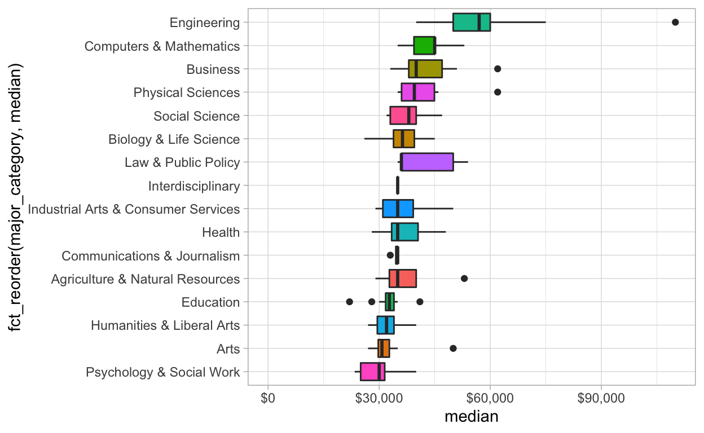

TidyTuesday Data. 2018-10-16
Downloading file 1 of 1: `recent-grads.csv`
# A tibble: 16 x 2
major_category n
<chr> <dbl>
1 Business 1302376
2 Humanities & Liberal Arts 713468
3 Education 559129
4 Engineering 537583
5 Social Science 529966
6 Psychology & Social Work 481007
7 Health 463230
8 Biology & Life Science 453862
9 Communications & Journalism 392601
10 Arts 357130
11 Computers & Mathematics 299008
12 Industrial Arts & Consumer Services 229792
13 Physical Sciences 185479
14 Law & Public Policy 179107
15 Agriculture & Natural Resources 75620
16 Interdisciplinary 12296What major categories (eg. business, engineering, etc ) were the most common?

Lets test the hypothesis all major categories
# A tibble: 2 x 5
term estimate std.error statistic p.value
<chr> <dbl> <dbl> <dbl> <dbl>
1 (Intercept) 52073. 1436. 36.3 6.57e-82
2 share_women -23650. 2403. -9.84 2.26e-18How about within in major categories, the the correlation is still available ?
# A tibble: 9 x 9
major_category data model term estimate std.error statistic
<chr> <lis> <lis> <chr> <dbl> <dbl> <dbl>
1 Biology & Lif <tib <lm> shar -43735. 20982. -2.08
2 Engineering <tib <lm> shar -33912. 15418. -2.20
3 Computers & M <tib <lm> shar -28694. 18552. -1.55
4 Business <tib <lm> shar -28171. 9810. -2.87
5 Agriculture & <tib <lm> shar -16263. 5975. -2.72
6 Physical Scie <tib <lm> shar -12820. 13349. -0.960
7 Education <tib <lm> shar -1996. 3084. -0.647
8 Humanities & <tib <lm> shar -1814. 4128. -0.439
9 Health <tib <lm> shar 54721. 23427. 2.34
# with 2 more variables: p.value <dbl>, fdr <dbl>